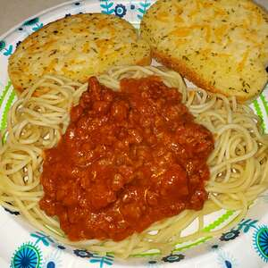

This recipe is for a delicious American version of the Italian spaghetti alla bolognese. A very simple version of the dish, this recipes only uses 6 ingredients and can be easily adjusted to feed any amount of hungry people!